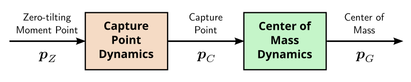

The capture point is a characteristic quantity of the linear inverted
pendulum model used in legged
robot locomotion. It was originally coined by Pratt et al. (2006) to address a question of push
recovery: where should the robot step right now to eliminate linear momentum
and come asymptotically to a stop?
Derivation
Let us start from the equation of motion of the linear inverted pendulum, where
all the mass is concentrated at the center of mass pG:
p¨G=ω2(pG−pZ)We assume that the robot steps instantly at time t=0 and maintains its
ZMP pZ at a constant
location in its new foothold, so that pZ is stationary. Since the
natural frequency ω of the pendulum is also a model constant, we
can solve this second-order linear differential equation as:
pG(t)=pZ+2eωt[pG(0)+ωp˙G(0)−pZ]+2e−ωt[pG(0)−ωp˙G(0)−pZ]This function is the sum of a stationary term pZ, a convergent term
factored by e−ωt that vanishes as t→∞, and a
term factored by eωt that diverges as t→∞.
Let us define the capture point as:
pC=defpG+ωp˙GThe divergent term in pG(t) is then eωt/2(pC(0)−pZ). In particular, the only way for the center of mass
trajectory to be bounded is for the stationary ZMP to be equal to the
instantaneous capture point:
pZ=pC(0) ⟹ pG(t)t→∞⟶pC(0)We can thus interpret the capture point as a point where the robot should step
(shift its ZMP) in order to come (asymptotically) to a stop.
Connection to balance
The capture point is a divergent component of motion of the linear inverted pendulum. Shifting the
ZMP to the capture point prevents divergence from the unstable dynamics of the
model, but does not control the other (stable) component. In effect, the system
comes to a stop following its natural dynamics:
p˙G=ω(pC−pG)This phenomenon is noticable in balance controllers based on
capture point feedback such as Englsberger et al. (2011) and Morisawa et al. (2012). Take the robot standing,
push it in a given direction and sustain your push, then suddenly release it:
the robot will come back to its reference standing position following its
natural dynamics (which only depend on ω, i.e. gravity and the
height of the center of mass), regardless of the values of the various feedback
gains used in the balance controller. You can for instance test this behavior
in dynamic simulations with the lipm_walking_controller.
This behavior highlights how balance controllers based on capture-point
feedback are not trying to come to a stop as fast as possible. Rather, they
focus on preventing divergence, and leverage passive dynamics to absorb
undesired linear momentum. When using linear feedback, Sugihara (2009) showed that this approach
maximizes the basin of attraction of the resulting controller.
Boundedness condition
The derivation above can be generalized to the case where pZ(t) is
time-varying rather than time-invariant. Consider the equation of motion split
as follows into divergent and convergent components:
p˙Cp˙G=ω(pC−pZ)=ω(pC−pG)The capture point diverges away from the ZMP while the center of mass is
attracted to the capture point:

As the center-of-mass dynamics are convergent, the system diverges if and only
if its capture point diverges. We can therefore focus on the
capture point dynamics alone.
The solution to a first-order linear time-varying differential equation is:
y˙(t)−a(t)y(t)=b(t) ⟹ y(t)=eA(t)(y(0)+∫τ=0tb(τ)e−A(τ)dτ)where A is the antiderivative of a such that A(0)=0.
Applied to capture point dynamics, this formula becomes:
pC(t)=eωt(pC(0)−ω∫τ=0tpZ(t)e−ωτdτ)We can check how, in the previous case where pZ is stationary, this
formula becomes:
pC(t)=pZ+eωt(pC(0)−pZ)The capture point trajectory is then bounded if and only if pZ=pC(0), which is indeed the result we obtained above. In the general case,
the capture point stays bounded if and only if:
pC(0)=ω∫τ=0tpZ(t)e−ωτdτThis condition was coined boundedness condition by Lanari et al. (2014). It relates future system
inputs to the present state, and characterizes the subset of these inputs that
will actually stabilize the system in the long run. The boundedness condition
is, for instance, a core component of the walking trajectory generator from
Scianca et al. (2019).
To go further
The notion of divergent component of motion
behind the capture point reaches beyond the linear inverted pendulum model. For
instance, there exists a generalization of the capture point to the more
general variable height inverted pendulum model, from which
the tiptoe balancing strategy emerges in addition to the stepping strategy.
Discussion
Feel free to post a comment by e-mail using the form below. Your e-mail address will not be disclosed.